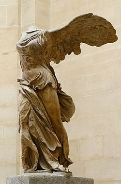
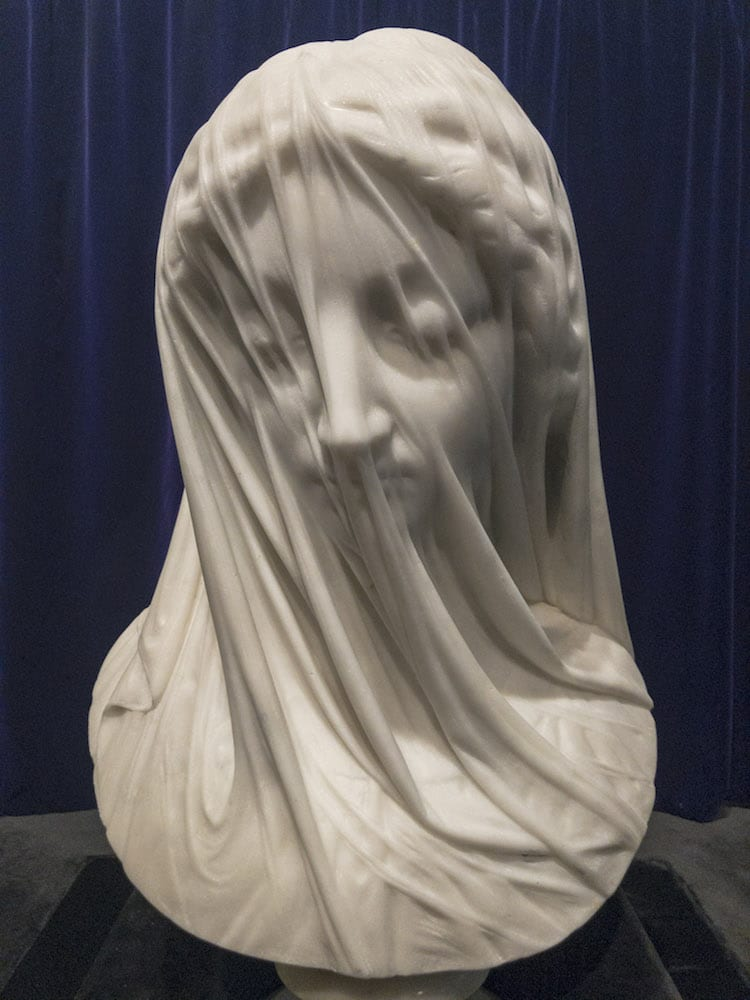
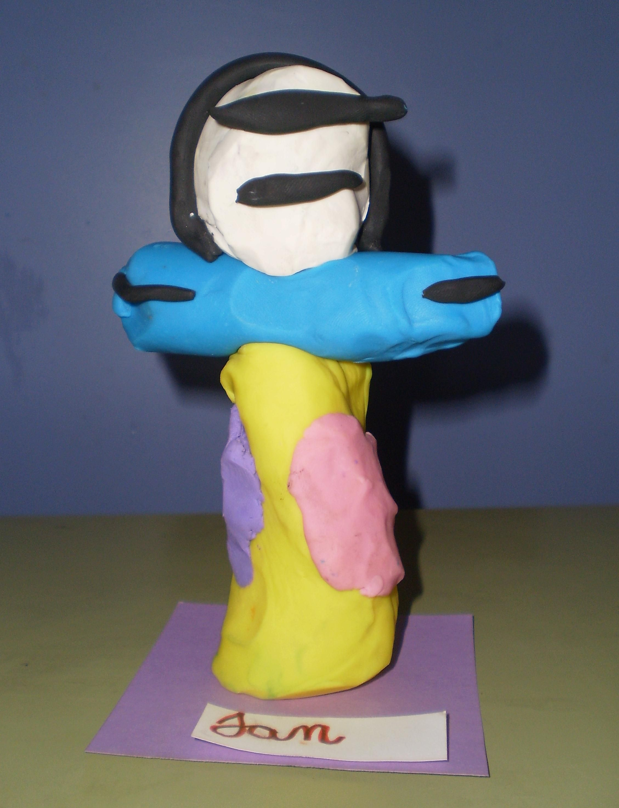

|
||||||
Escultura |
||||||
¿Qué es? |
||||||
Se llama escultura (del latín sculptūra) al arte de modelar el barro, tallar en piedra, madera u otros materiales. También se denomina escultura a la obra elaborada por un escultor. Es una de las Bellas Artes en la cual el escultor se expresa creando volúmenes y conformando espacios. En la escultura se incluyen todas las artes de talla y cincel, junto con las de fundición y moldeado. Dentro de la escultura, el uso de diferentes combinaciones de materiales y medios ha originado un nuevo repertorio artístico, que comprende procesos como el constructivismo y el assemblage. En un sentido genérico, se entiende por escultura la obra artística plástica realizada por el escultor. Las primeras manifestaciones escultóricas se remontan al Paleolítico inferior, cuando el hombre cortaba el sílex percutiendo contra otra piedra. Posteriormente utilizó el grabado, el relieve en piedra y en huesos de animales. Hace unos 27 000 y 32 000 años aparecen representadas unas exuberantes figuras humanas femeninas de piedra, en una exaltación artística de la fertilidad; son las «venus paleolíticas», como la Venus de Willendorf y la Venus de Lespugue. Durante el período Magdaleniense se utilizaron bastones y propulsores con motivos ornamentales. En el Paleolítico superior, los ejemplos más abundantes son tallas u objetos grabados que evolucionaron desde una fase más primitiva, con decoraciones más esquemáticas, hasta llegar a la representación de figuras animalísticas que se adaptaban a la estructura del hueso. La arcilla también fue un material habitual. Las primeras piezas escultóricas que se conocen proceden de Egipto, China, India y el Cercano Oriente, lugares donde hacia el 4000 a. C. ya existían hornos para fabricar objetos de alfarería.Uno de los avances más importantes en la historia de la escultura fue el poder trabajar el metal—primero el bronce y luego el hierro—, que sirvió para fabricar herramientas más eficientes y, además, obtener un nuevo material para realizar obras escultóricas. El proceso de construcción de la obra primero en arcilla y luego vaciarla en bronce ya se conocía en las antiguas civilizaciones griegas y por los romanos, y es el sistema que actualmente, en el siglo XXI, todavía se utiliza. A partir del siglo V a. C., en el último periodo del Edad del Hierro, los celtas desarrollaron la cultura de La Tène, propagándose por toda Europa; representó una evolución del arte de la cultura de Hallstatt. En la decoración de todos sus objetos, espadas, escudos, broches y diademas, se pueden observar motivos de animales, plantas y figuras humanas. A partir del siglo III a. C. se acuñaron las primeras monedas siguiendo los modelos helénicos, así como obras figurativas como el Dios de Bouray, realizado en chapa de cobre repujada. |
||||||
¿Cómo se hace? |
¿Cómo ha cambiado con el tiempo? |
|||||
| Los escultores suelen preparar su obra construyendo un pequeño modelo de la figura, de arcilla o yeso. Este modelo equivale al esbozo del pintor o plano del arquitecto. El procedimiento fundamental y el más clásico es el esculpido, sirviéndose de escoplo, buril o cincel según las necesidades, incluso los procedimientos de fundir y moldear requieren retoques de cincel en los detalles. Además, se usan otras acciones como el modelado o vaciado, el cincelado, el repujado, el embutido, el grabado y el estampado o troquelado. Es interesante darse cuenta de lo poco que han cambiado con el paso del tiempo las técnicas del modelado y la talla, en comparación con los cambios que se han producido en otras técnicas de bellas artes. Sólo en el siglo XX se empezaron a introducir nuevos métodos de trabajo. | Desde tiempos remotos el hombre ha tenido la necesidad de esculpir. Al principio lo hizo con los materiales más simples y que tenía más a mano: piedra, arcilla y madera. Después empleó hierro, bronce, oro, plomo, cera, yeso, plastilina, resina de poliéster y plásticos con refuerzo de fibra de vidrio, hormigón, la cinética y la reflexión de la luz, entre otros. La escultura tuvo en su principio una única función, su uso inmediato; posteriormente se añadió una función ritual, mágica, funeraria y religiosa. Esta funcionalidad fue cambiando con la evolución histórica, adquiriendo una principalmente estética o simplemente ornamental y llegó a ser un elemento duradero o efímero. |
|||||
.jpg) |
 | |||||
¿Qué la hace única? |
¿Cómo conocer de ella y practicarla en casa? |
|||||
La escultura es de gran importancia porque muestran una parte importante de la historia del hombre, además se utiliza desde tiempos antiguos para homenajear y recordar personajes importantes para otras personas, pueblos o para el mundo.
|
Puedes usar materiales baratos como plastilina, arcilla, madera y ver videos en casa. | |||||
 |
 | |||||
Recomendaciones generales |
||||||
Recomiendo empezar investigando y aprendiendo sobre la escultura por internet en ese lapso si despiertas el deseo por aprender mas sobre este arte deberias acercarte a alguna escuela de artes cerca de tu localidad. En lo personal acudiria a ver documentales en internet ya que aparte de cultivar tus conocimientos sobre el tema podras mejorar tus tecnicas aprendiendo mas sobre aquellos antiguos escultores que invirtieron toda su vida en ese arte, es una buena forma de relacionarte con la situacion que se vivia en aquellos dias y cambiar tu percepcion sobre las esculturas que se tallaban en aquellos tiempos, podras encontrar tu tipo de arte favorito y especializarte en el. Michelangelo Bounarroti Gian Lorenzo "Bernini" |
||||||
Historieta |
||||||
 |
||||||
| ||||||